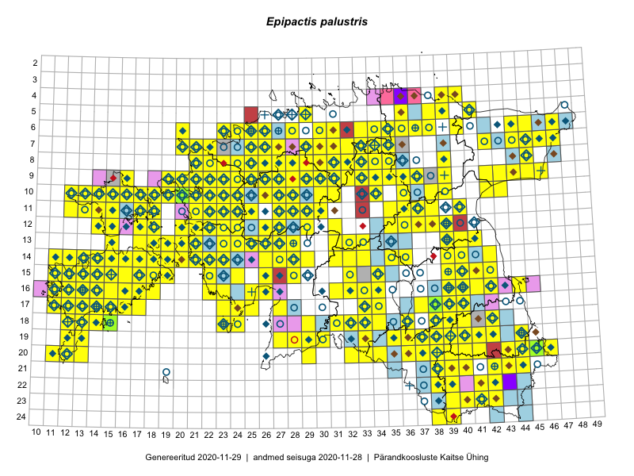

Epipactis palustris
Uuendatud: 2016-12-01
Kaardile koondatud taksonid: Epipactis palustris (L.) Crantz

Kaart põhineb 738 kirjel.
Kuvatud viited 20 esimesele andmebaasikirjele, ülejäänud PlutoFis
- Toomas Kukk, Eerik Leibak: 2015-08-07: 13-19: GPS punkt
- Thea Kull: 2015-07-07: 16-40: ala
- Rein Kalamees, Kersti Püssa: 2015-07-15: 20-45: GPS punkt
- Toomas Kukk, Eerik Leibak: 2015-08-09: 14-15: ala
- Toomas Kukk, Eerik Leibak: 2015-08-09: 14-15: GPS punkt
- Toomas Kukk, Peedu Saar: 2015-08-05: 20-11: ala
- Toomas Kukk, Peedu Saar, Kersti Tambets, Sten Mander, Janika Sammasto: 2015-08-06: 20-11: GPS punkt
- Toomas Kukk, Eerik Leibak: 2015-08-12: 10-17: ala
- Toomas Kukk, Eerik Leibak: 2015-08-12: 10-17: GPS punkt
- Toomas Kukk, Eerik Leibak: 2015-08-12: 10-17: GPS punkt
- Peedu Saar, Liina Oja: 2015-07-23: 07-46: GPS punkt
- Peedu Saar, Liina Oja: 2015-07-23: 07-46: GPS punkt
- Peedu Saar, Liina Oja: 2015-07-23: 07-46: GPS punkt
- Peedu Saar, Liina Oja: 2015-07-24: 09-45: GPS punkt
- Peedu Saar, Liina Oja: 2015-07-24: 09-45: GPS punkt
- Peedu Saar, Liina Oja: 2015-07-24: 09-45: GPS punkt
- Peedu Saar, Thea Kull: 2015-06-19: 17-40: GPS punkt
- Peedu Saar, Thea Kull: 2015-06-17: 17-38: GPS punkt
- Peedu Saar, Thea Kull: 2015-06-17: 17-38: GPS punkt
- Peedu Saar: 2015-07-15: 15-39: GPS punkt